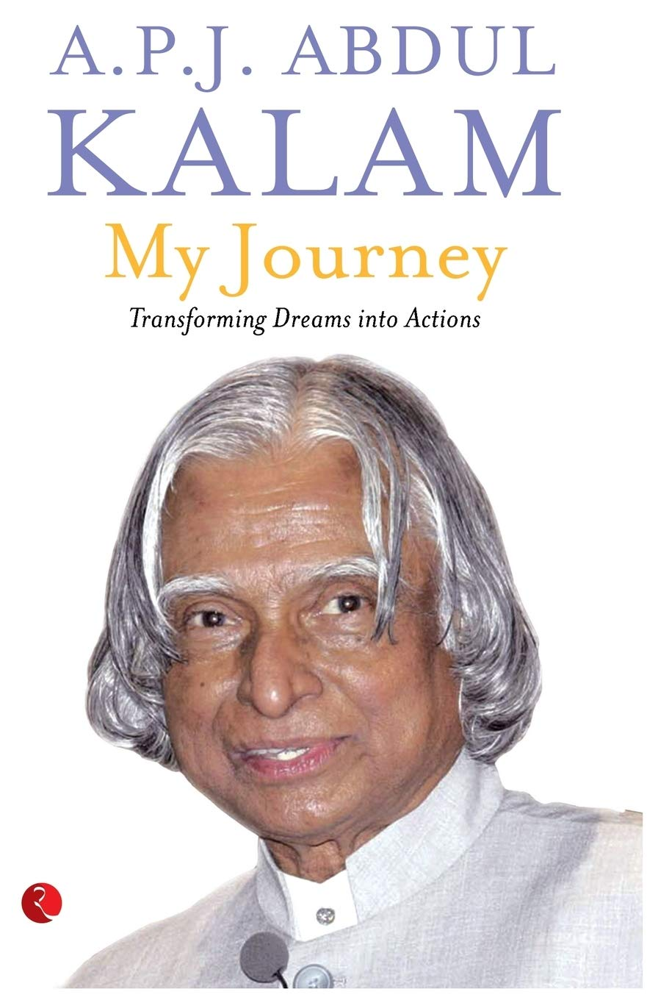
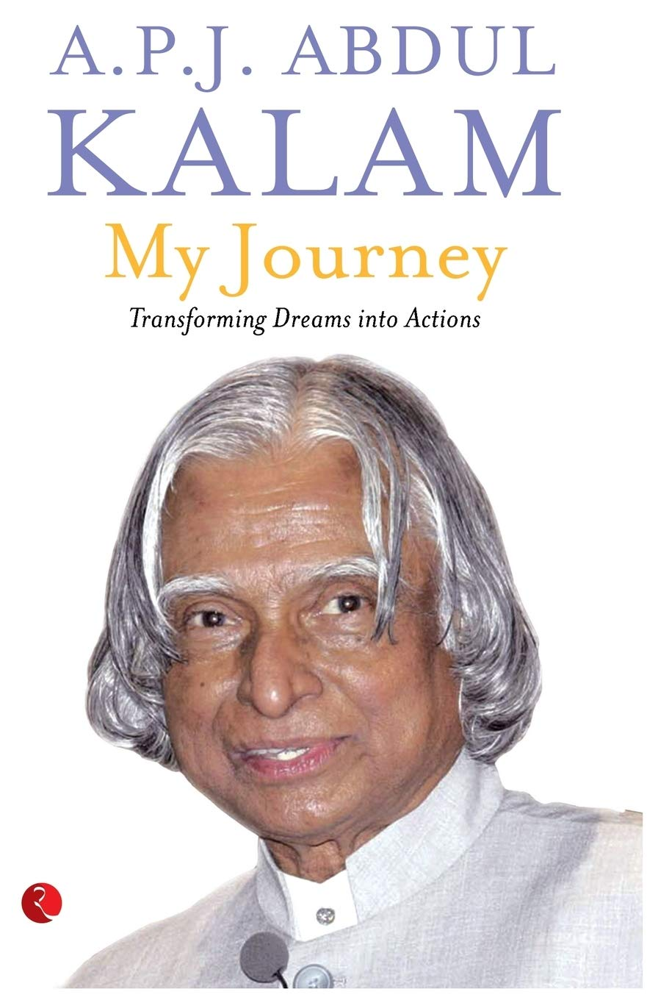

A.P.J ABDUL KALAM
MISSILE MAN
Man of Great Bravery

.jpg)
Personal Background
Avul Pakir Jainulabdeen Abdul Kalam (15 October 1931 – 27 July 2015) was an Indian aerospace scientist who served as the 11th President of India from 2002 to 2007. He was born and raised in Rameswaram, Tamil Nadu and studied physics and aerospace engineering. He spent the next four decades as a scientist and science administrator, mainly at the Defence Research and Development Organisation (DRDO) and Indian Space Research Organisation (ISRO) and was intimately involved in India's civilian space programme and military missile development efforts. He thus came to be known as the Missile Man of India for his work on the development of ballistic missile and launch vehicle technology. He also played a pivotal organisational, technical, and political role in India's Pokhran-II nuclear tests in 1998, the first since the original nuclear test by India in 1974. Kalam was elected as the 11th President of India in 2002 with the support of both the ruling Bharatiya Janata Party and the then-opposition Indian National Congress. Widely referred to as the "People's President", he returned to his civilian life of education, writing and public service after a single term. He was a recipient of several prestigious awards, including the Bharat Ratna, India's highest civilian honour. While delivering a lecture at the Indian Institute of Management Shillong, Kalam collapsed and died from an apparent cardiac arrest on 27 July 2015, aged 83. Thousands, including national-level dignitaries, attended the funeral ceremony held in his hometown of Rameswaram, where he was buried with full state honours.
Writings
In his book India 2020, Kalam strongly advocated an action plan to develop India into a "knowledge superpower" and a developed nation by the year 2020. He regarded his work on India's nuclear weapons programme as a way to assert India's place as a future superpower.
I have identified five areas where India has a core competence for integrated action: agriculture and food processing; education and healthcare; information and communication technology; infrastructure, reliable and quality electric power, surface transport and infrastructure for all parts of the country; and self-reliance in critical technologies. These five areas are closely inter-related and if advanced in a coordinated way, will lead to food, economic and national security.
Kalam describes a "transformative moment" in his life when he asked Pramukh Swami, the guru of the BAPS Swaminarayan Sampradaya, how India might realise this five-pronged vision of development. Pramukh Swami's answer—to add a sixth area developing faith in God and spirituality to overcome the current climate of crime and corruption—became the spiritual vision for the next 15 years Kalam's life, which he describes in his final book, Transcendence: My Spiritual Experiences with Pramukh Swamiji, published just a month before his death.
 

It was reported that there was considerable demand in South Korea for translated versions of books authored by him.
Kalam took an active interest in other developments in the field of science and technology, including a research programme for developing biomedical implants. He also supported open source technology over proprietary software, predicting that the use of free software on a large scale would bring the benefits of information technology to more people.
Kalam set a target of interacting with 100,000 students during the two years after his resignation from the post of scientific adviser in 1999. He explained, "I feel comfortable in the company of young people, particularly high school students. Henceforth, I intend to share with them experiences, helping them to ignite their imagination and preparing them to work for a developed India for which the road map is already available." His dream is to let every student to light up the sky with victory using their latent fire in the heart.
Documentaries and Books by Dr. Kalam
- Ignited Minds: Unleashing the Power Within India
- Inspiring Thoughts
- Indomitable Spirit
- The Luminous Sparks
- Turning Points: A journey through challenges
- My Journey: Transforming Dreams into Actions.
- Developments in Fluid Mechanics and Space Technology, by Dr. A.P.J. Abdul Kalam and Roddam Narasimha.
- India 2020: A Vision for the New Millennium, by Dr. A.P.J. Abdul Kalam and Y.S. Rajan.
- Wings of Fire: An Autobiography, by Dr. A.P.J. Abdul Kalam and Arun Tiwari.
- Mission India, by Dr. A.P.J. Abdul Kalam.
- Envisioning an Empowered Nation, by Dr. A.P.J. Abdul Kalam and A. Sivathanu Pillai.
- You Are Born To Blossom: Take My Journey Beyond, by Dr. A.P.J. Abdul Kalam and Arun Tiwari.
- Target 3 Billion, by Dr. A.P.J. Abdul Kalam and Srijan Pal Singh.
Awards and Honours
Kalam received 7 honorary doctorates from 40 universities. The Government of India honoured him with the Padma Bhushan in 1981 and the Padma Vibhushan in 1990 for his work with ISRO and DRDO and his role as a scientific advisor to the Government. In 1997, Kalam received India's highest civilian honour, the Bharat Ratna, for his contribution to the scientific research and modernisation of defence technology in India. In 2013, he was the recipient of the Von Braun Award from the National Space Society "to recognize excellence in the management and leadership of a space-related project".
In 2012, Kalam was ranked number 2 in Outlook India's poll of the Greatest Indian.
Following his death, Kalam received numerous tributes. The Tamil Nadu state government announced that his birthday, 15 October, would be observed across the state as "Youth Renaissance Day;" the state government further instituted the "Dr. A. P. J. Abdul Kalam Award", constituting an 8-gram gold medal, a certificate and ₹500,000 (US$7,000). The award will be awarded annually on Independence Day, beginning in 2015, to residents of the state with achievements in promoting scientific growth, the humanities or the welfare of students.
On the anniversary of Kalam's birth in 2015 the CBSE set topics on his name in the CBSE expression series.
Prime Minister Narendra Modi ceremonially released postage stamps commemorating Kalam at DRDO Bhawan in New Delhi on 15 October 2015, the 84th anniversary of Kalam's birth.
Researchers at the NASA's Jet Propulsion Laboratory (JPL) had discovered a new bacterium on the filters of the International Space Station (ISS) and named it Solibacillus kalamii to honour the late president Dr. A. P. J. Abdul Kalam.
Several educational and scientific institutions and other locations were renamed or named in honour of Kalam following his death.
- Kerala Technological University, headquartered at Thiruvananthapuram where Kalam lived for years, was renamed to A P J Abdul Kalam Technological University after his death.
- An agricultural college at Kishanganj, Bihar, was renamed the "Dr. Kalam Agricultural College, Kishanganj" by the Bihar state government on the day of Kalam's funeral. The state government also announced it would name a proposed science city after Kalam.
- India's First Medical Tech Institute named as Kalam Institute of Health Technology located at Visakhapatnam.
- Uttar Pradesh Technical University (UPTU) was renamed A. P. J. Abdul Kalam Technical University by the Uttar Pradesh state government.
- A. P. J. Abdul Kalam Memorial Travancore Institute of Digestive Diseases, a new research institute in Kollam city, Kerala attached to the Travancore Medical College Hospital.
- A new academic complex at Mahatma Gandhi University in Kerala.
- Construction of Dr. A. P. J. Abdul Kalam Science City started in Patna in February 2019.
- A new science centre and planetarium in Lawspet, Puducherry.
- India and the US have launched the Fulbright-Kalam Climate Fellowship in September 2014. The first call for applicants was announced on Friday, 12 March 2016, for the fellowship which will enable up to 6 Indian PhD students and post-doctoral researchers to work with US host institutions for a period of 6–12 months. The fellowship will be operated by the binational US-India Educational Foundation (USIEF) under the Fulbright programme.
- Dr APJ Abdul Kalam Planetarium in Burla, Sambalpur, Odisha was named after him.
| Year of Award/Honour | Name of Award/Honour | Awarding Organisation |
|---|---|---|
| 2014 | Honorary professor | Beijing University, China |
| 2014 | Doctor of Science | Edinburgh University, UK |
| 2013 | Von Braun Award | National Space Society |
| 2012 | Doctor of Laws (Honoris Causa) | Simon Fraser University |
| 2011 | IEEE Honorary Membership | IEEE |
| 2010 | Doctor of Engineering | University of Waterloo |
| 2009 | Honorary Doctorate | Oakland University |
| 2009 | Hoover Medal | ASME Foundation, USA |
| 2009 | International von Kármán Wings Award | California Institute of Technology, USA |
| 2008 | Doctor of Engineering (Honoris Causa) | Nanyang Technological University, Singapore |
| 2008 | Doctor of Science (Honoris Causa) | Aligarh Muslim University, Aligarh |
| 2007 | Honorary Doctorate of Science and Technology | Carnegie Mellon University |
| 2007 | King Charles II Medal | Royal Society, UK |
| 2007 | Honorary Doctorate of Science | University of Wolverhampton, UK |
| 2000 | Ramanujan Award | Alwars Research Centre, Chennai |
| 1998 | Veer Savarkar Award | Government of India |
| 1997 | Indira Gandhi Award for National Integration | Indian National Congress |
| 1997 | Bharat Ratna | President of India |
| 1995 | Honorary Fellow | National Academy of Medical Sciences |
| 1994 | Distinguished Fellow | Institute of Directors (India) |
| 1990 | Padma Vibhushan | Government of India |
| 1981 | Padma Bhushan | Government of India |
Never give up on your dreams, no matter how old you are, no matter where you are today. Do not give up dreaming for a better tomorrow.